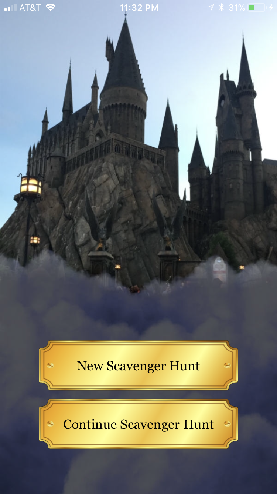
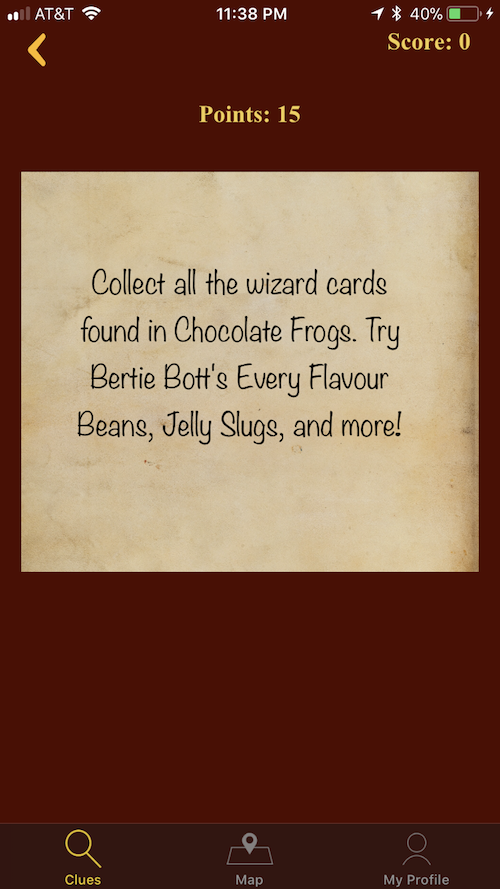
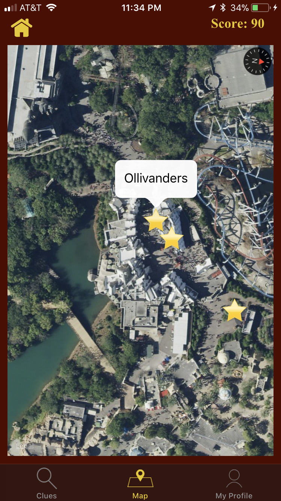
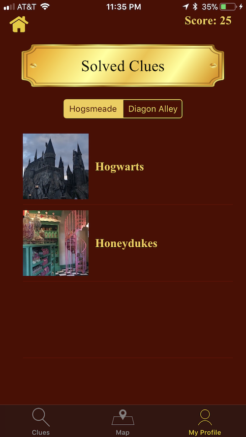
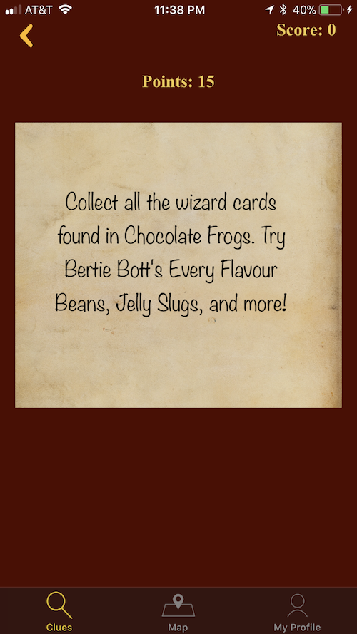
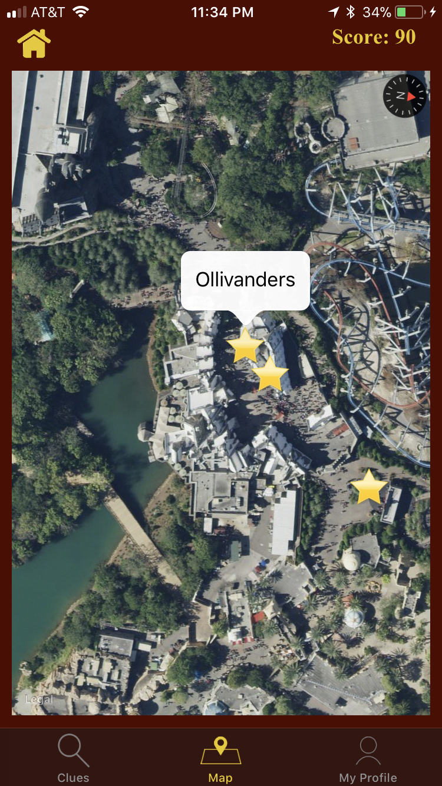
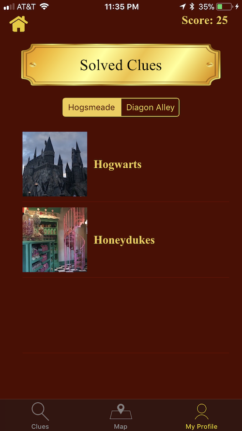

Izcalli of the Wind [Team of 16] - Unreal/C++Gameplay/Tools ProgrammerAn action adventure Aztec inspired game where Izcalli is brought into the realm of the Wind God to help him repower his temple by navigating obstacles using her wind powered hoverboard. This is the capstone game for my masters program, we are working on this game for two semseters in a multidisciplinary team. Click here for more details |
Procedural Building Generator - Unreal/C++Personal Deep Dive ProjectA procedural building generater to generate both residential houses and city buildings I worked on as a personal deep dive project for my master's program; check out my development diary for more details |
DaVinci Buttonology [Team of 8] - Unity C#/VRGameplay ProgrammerA VR game prototype using the Oculus Quest to teach medical staff how to use the DaVinci Surgical machine to prepare for surgery. This was a group project for a class in partnership with Advent Health. I was the only programmer in a multidisciplinary team of 8. This game was very interesting and challenging since it was my first VR game and recreating the DaVini's movement was very important; therefore making sure the VR interactions with the machine worked well took most of the game's production time. The machine's movements were generated based on the player's hand movement near the buttons and the parts of the machine that can be moved. |
Super Mario Bros Recreated [Team of 2] - C++Gameplay ProgrammerRecreated level 1 of Super Mario Bros in C++ with another programmer for an assignment. I worked on the general game flow, menus, sprites and animations, and creating a text representation of the level so the collision boxes and the enemys are in the corect positions in the level. I also worked on the camera system to move in the level similar to the original game. We were not able to add all the details like the audio and the fire projectiles (for Fire Mario) since we had less than 3 weeks to complete this. |
Game Prototypes [Teams of 5] - UnityGameplay ProgrammerThe following game was made in a game prototype class where every two weeks teams of 5 randomly assigned people [2 producers, 2 artists, and 1 programmer] worked on a game with a specific requirement or theme. The rest of the games can be found here |
Escaping Waldo [Team of 3] - UnrealGameplay ProgrammerA PC game where you collect the hidden Waldo game pieces and make your way to the exit while avoiding the evil Waldo. This game was made for an undergrad class with 2 other programmers and was my first game using the Unreal Engine 4. I worked on the menus and game flow, the collection mechanic, and mainly the wandering AI for the crowd (also used for Waldo when he is in a wandering state). |
EEG 3D modeling Application [Team of 5] - PythonUndergraduate Capstone ProjectA desktop application that creates 3D models from EEG brain scans. The 3D models are saved as .stl files and can be printed using a 3D printer. Synaptograph was my capstone project at The University of Central Florida; I worked on it with four other Computer Science students. The project is sponsored by professors Ryan Byussens and Matt Dombrowski. We used the Emotiv Epoc+ headset to obtain the EEG brain scans. |
iOS GPS Game - SwiftFun Personal ProjectLocation based game where players are given clues for locations inside a the Wizarding World of Harry Potter at Universal and earn points for visiting these locations. This was just a fun personal project to learn Swift/iOS develpoment and location-based games. This game was not published since I don't have rights to publish it.   





|
Mondrian Art Generator - JavaScriptFun Weekend Personal ProjectGnerates Mondrian style art using a divide and conquer approach; the idea for this project was provided by my data structures professor. This was a fun weekend project done using JavaScript, the code can be found here. Click on the button below to generate different Mondrian art! |